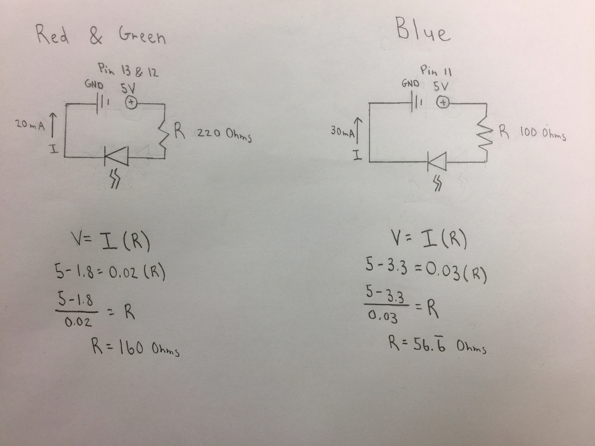
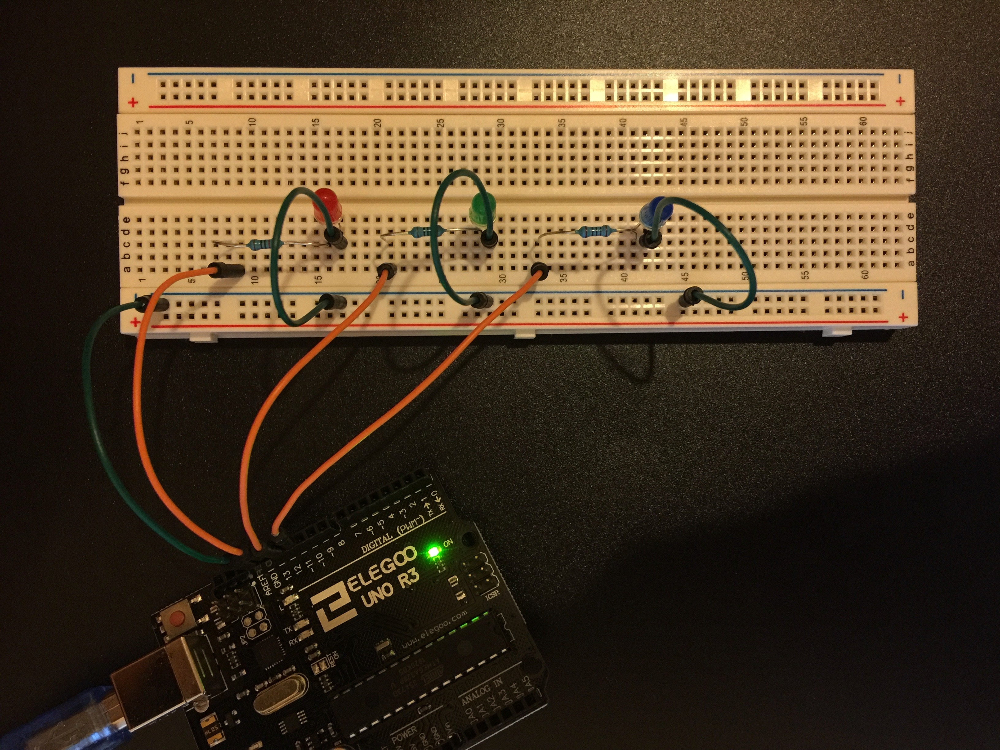

Steven Yong's Assignment 1!
Schematic
I started out with pencil and paper to sketch out the schematic and calculate the resistances needed for the LEDs. The schematic took some trial and error, but I got there. Please note that I had to round up the resistances on the resistors used because they only come in certain increments.
Circuit
Now the fun part: circuits! I plugged the wires and resistors into my Arduino and breadboard using my schematic as a blueprint. I wasn't sure if I could just link all of them without having to use a ground for each and every pin used, so I tried it and it didn't work. It's an iteration thing and a learning process.
Firmware
void setup() {
pinMode(13, OUTPUT); // initialize digital pin 13 as an output
pinMode(12, OUTPUT); // initialize digital pin 12 as an output
pinMode(11, OUTPUT); // initialize digital pin 11 as an output
}
// the loop function runs over and over again forever
void loop() {
digitalWrite(13, HIGH); // turn the red LED (pin 13) on by making the voltage HIGH
digitalWrite(12, HIGH); // turn the green LED (pin 12) on by making the voltage HIGH
digitalWrite(11, HIGH); // turn the blue LED (pin 11) on by making the voltage HIGH
delay(500); // wait for half a second
digitalWrite(13, LOW); // turn the red LED (pin 13) off by making the voltage LOW
digitalWrite(12, LOW); // turn the green LED (pin 12) off by making the voltage LOW
digitalWrite(11, LOW); // turn the blue LED (pin 11) off by making the voltage LOW
delay(500); // wait for half a second
}
I felt like a clunky algorithm writing this repetitive code. There has to be a better way (counter and nested loop a possibility). Since this was my first time, I was more worried about the physical part so I just settled for this inefficient code.
Circuit's Operation

I plugged the Arduino into my laptop (using the USB cable provided in the box). The tiny yellow LED on the Arduino and the red LED quickly flashed as I pressed upload. The moment of truth. I prayed. It works. Yay!